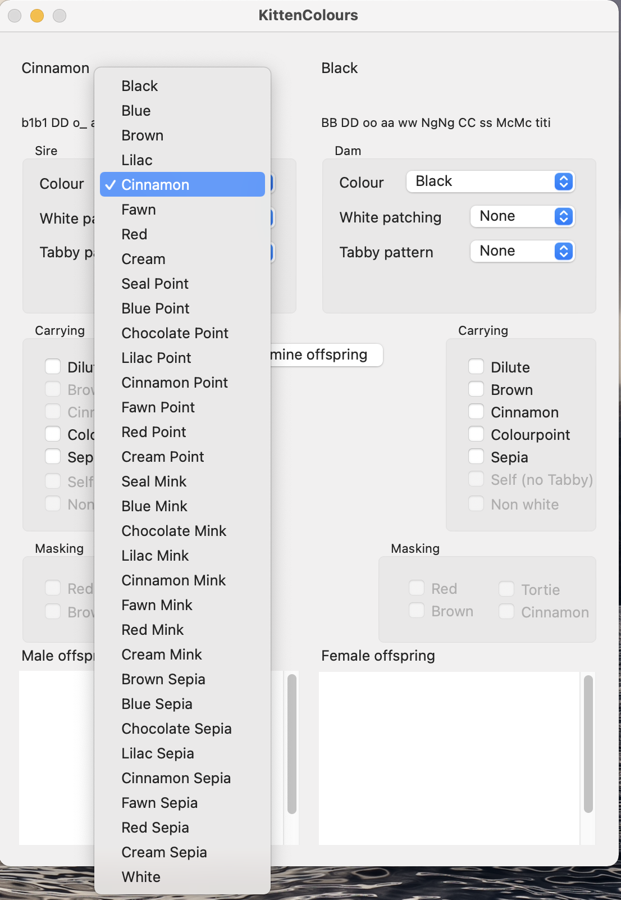
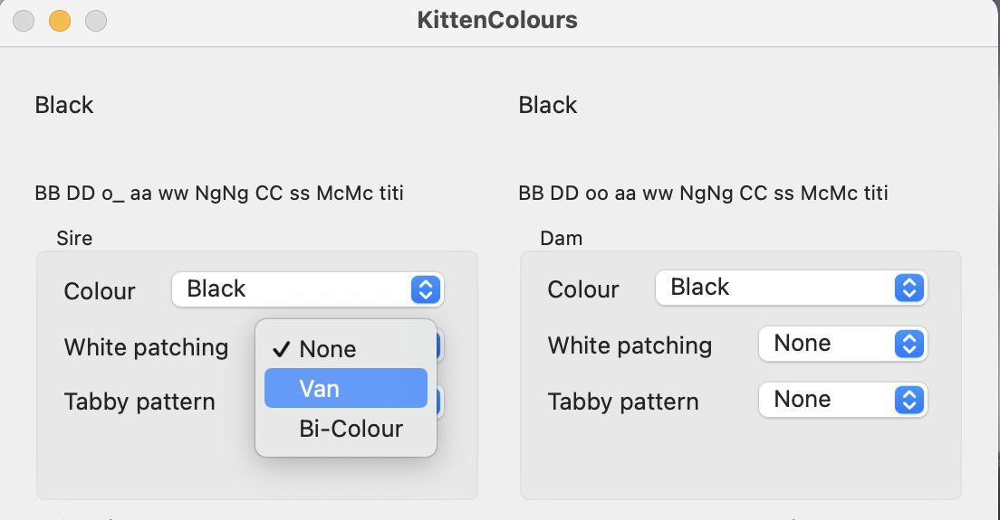
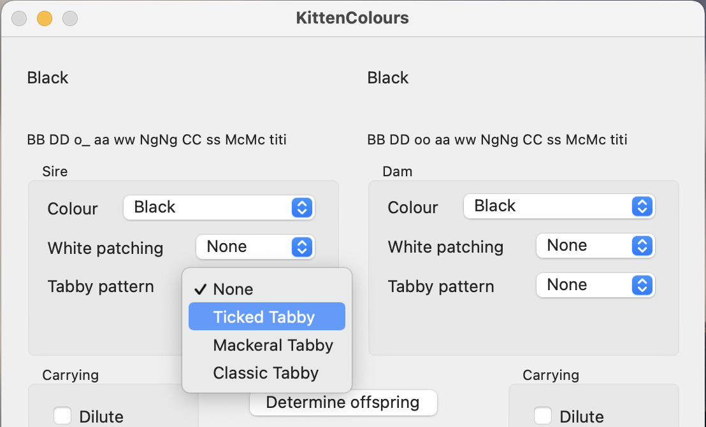
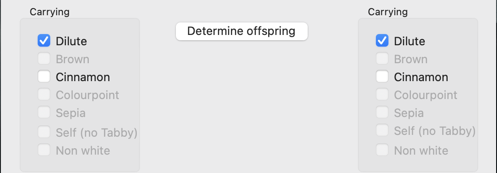
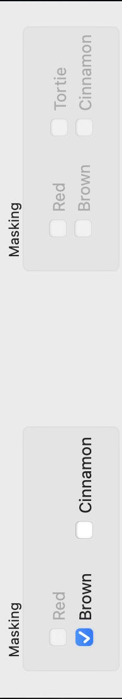
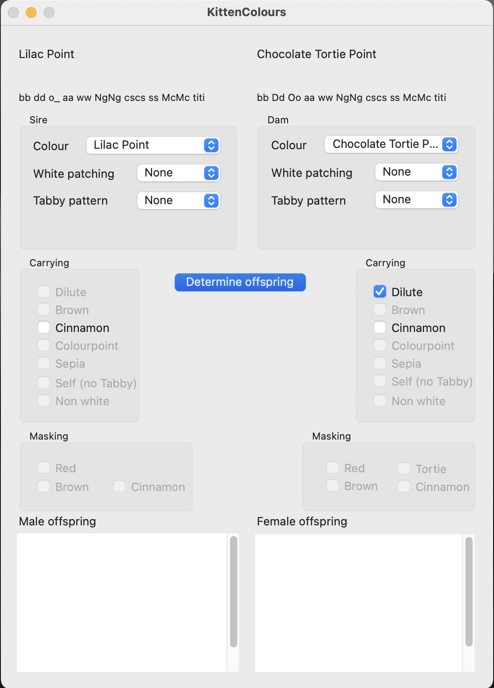
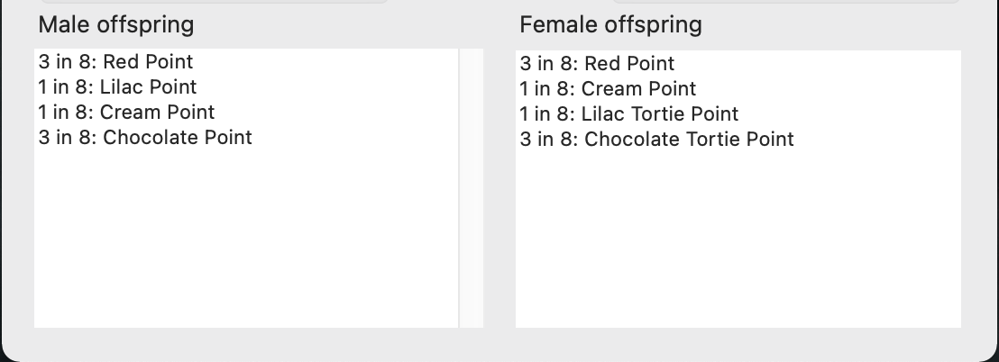
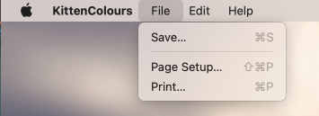

Calculates colours and likelihoods from a cat mating
Kitten Colours is an application which will generate all the colours likely from the mating of two cats, and also
the probabability for each colour.
To use this application you:-
- Choose the base colour of the sire and dam

- Choose the amount of white spotting they have - none, bi-colour or van.

- Choose what tabby pattern they display - none, ticked, mackeral or classic.

- Select any hidden recessive colours they are carrying. If they cannot be carrying these recessive genes the
checkbox for that choice will be greyed out.

- Select any base colour which is masked by white or red/cream. Any impossible choices will again be greyed out.

- And press the determine offspring button.

- This will give you a list of all the colours possible with that mating and the chance that they could occur for
male kittems and female kittens.

- You can now save this to a RTF file, or print it on your printer
